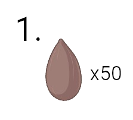
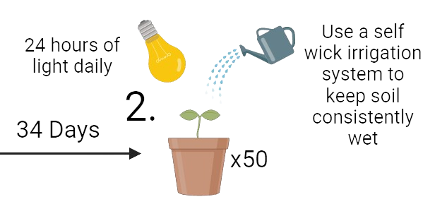
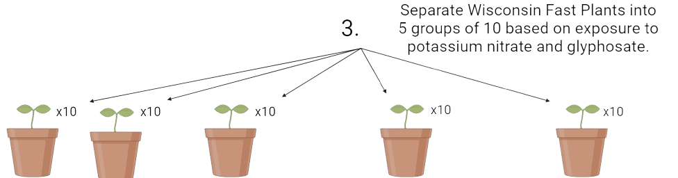
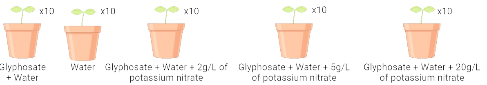
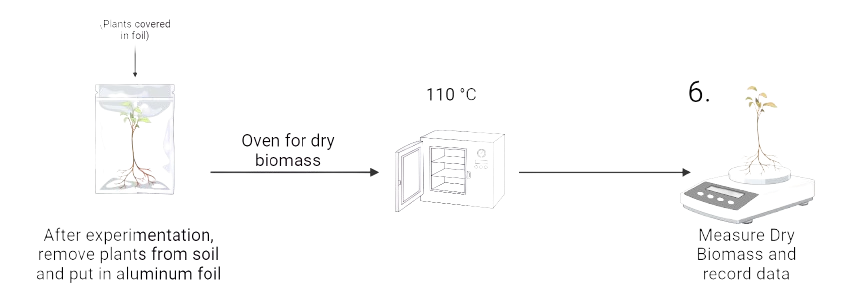

Procedure
The procedure used for this research project
Step |
Description |
Image |
|---|---|---|
1 |
100 seeds of Rapid-cycling Brassica
rapa were included in this study. They were purchased from
Carolina Biological Supply Company
Setup: 
|
 |
2 |
All seeds were watered with tap water while
being grown, which was obtained from a house sink. Water was replaced
whenever needed. Seeds were provided with fertilizer pellets to maintain
the necessary nutrients and minerals in the soil needed for sufficient
growth. Grow lights were on for 24 hours a day.
|
 |
3 |
After 34 days, the plants were split up into
groups of 10, meaning 5 groups were formed in total. Using lab tape and
Sharpie, the groups were differentiated (Positive Control, Negative
Control, and Experimental Groups 3, 4, and 5).
|
 |
4 |
Note: Glyphosate was applied as per protocol, which was to spray the glyphosate on the leaves. This solution replaced the water at the bottom of the tray, so the plants were only receiving the solution they were meant to. |
 |
5 |
All 5 groups were treated the same, except with
for their respective solution in the tray and the presence of
glyphosate.
They all received 24 hours of light every day. This experimental
treatment went on
for 7 days.
|
 |
6 |
After seven days of experimentation,
plant length and dry biomass data were collected. Plant length data was
collected by measuring the length from the soil, where the base of the
stem was, to the highest point of the plant. This was performed on each
plant and data was recorded. Dry biomass was collected by carefully
removing each plant from its pot.
Plants were removed gently and slowly so no part of the plant was ripped
off and could alter the results. A paintbrush was used to remove any
soil. Plants were put in a laboratory oven in foil to dry them out and
to get
the proper conditions for measuring dry biomass. Plants were put in the
oven for 22 hours at 110°C. Using the Mettler Toledo AE163 Analytical
Balance, each plant’s dry biomass was recorded.
|
 |
7 |
Experiment was done again to ensure that the
results were accurate.
Data analysis was done using Google Sheets. The mean, standard deviation, and variance for each separate group were calculated. Along with the mean, variation, and standard deviation, an ANOVA test was performed on all the groups. When the test came back statistically significant, a one-tail, type 3 (two-sample paired), T-test was performed. Each group was compared to each other, and the groups that had a statistical difference were noted. |